Chapter 1 · Part 1 — Into the Woods
“Help! A !” .
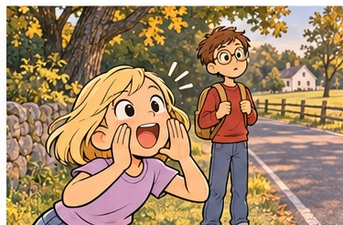
“Yeah, ,” . “A real in Frog Creek, Pennsylvania.”
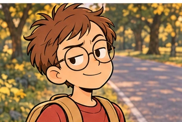
“, !” . up the .
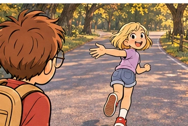
Oh, .
is what got spending time with his seven-year-old .
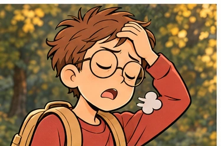
loved stuff. But was eight a half. liked real things.
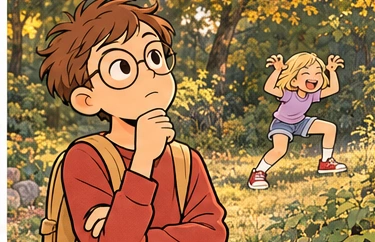
“Watch out, ! The ’s coming! Race !”
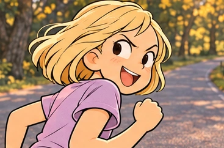
“, thanks,” .
raced into the .
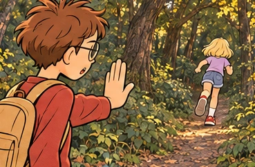
at the sky. The sun was to set.
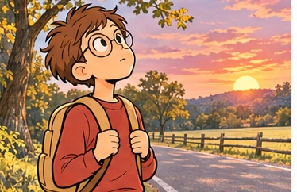
“, ! ’s time to !”
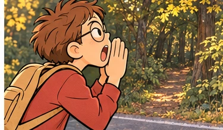
But had disappeared.
waited.
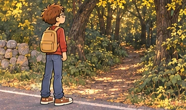
.
“!” again.
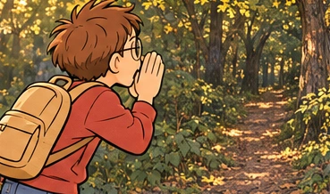
“! ! Come here!”
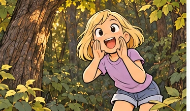
groaned. “ better be good,” .
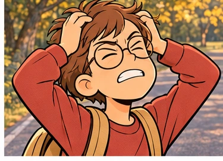
left the headed into the . The trees were lit with a golden -afternoon light.
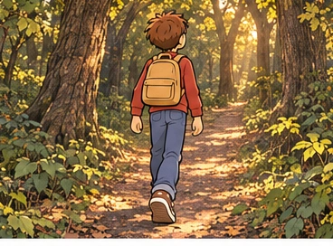
“Come here!” called .
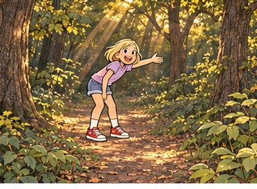
was. Standing under a tall oak . “,” . was pointing at a .
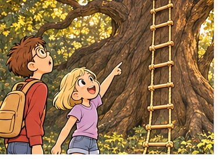
The longest had ever seen.
“Wow,” whispered.
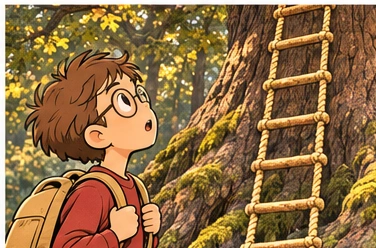
The went all the way up to the top of the .
—at the top—was a . was tucked between two branches.
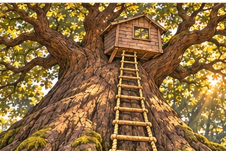
“That must be the highest in the ,” .
“Who built ?” . “I’ve never seen before.”
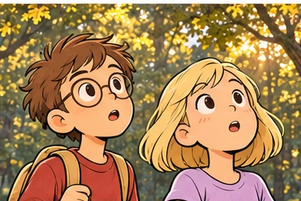
“I don’t know. But I’m going up,” .
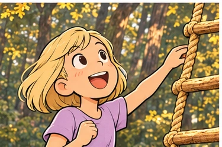
“. don’t know who belongs to,” .
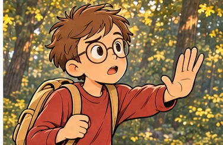
“Just a teeny minute,” . started up the .
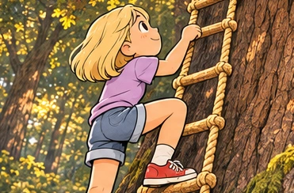
“, come !”
kept climbing.
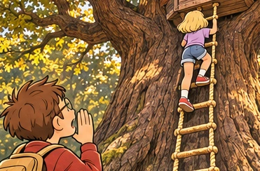
. “, ’s almost dark. have to .”
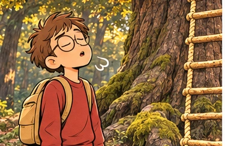
disappeared inside the .
“An-nie!”
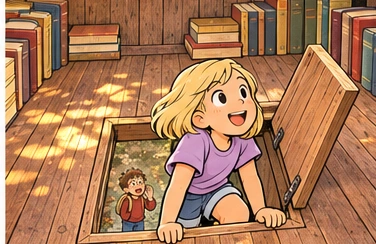
waited a moment. was to call again when poked her head out of the .
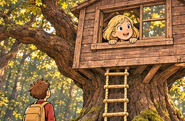
“!” .
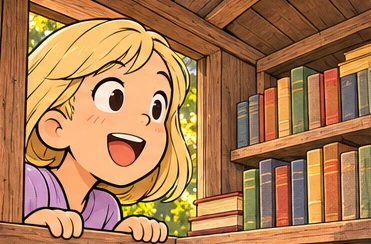
“What?”
“’s filled with !”
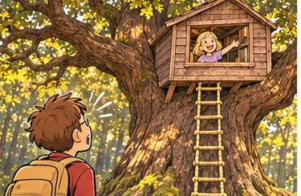
Oh, man! loved .
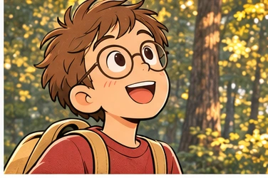
pushed his into place. the sides of the , up went.
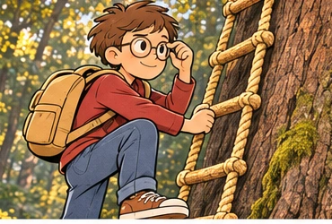